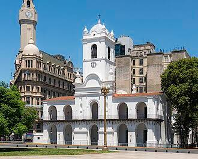

Legado político
La Revolución abrió un período de experimentación política y de búsqueda de nuevas formas de gobierno.
Efemérides escolares de Argentina
Revolución de Mayo y Primer Gobierno Patrio
Esta sección no repite la biografía de un prócer: analiza qué ideas y aprendizajes dejó la Revolución de Mayo y por qué la fecha continúa formando parte de la memoria colectiva.
La Revolución abrió un período de experimentación política y de búsqueda de nuevas formas de gobierno.
La movilización de distintos sectores mostró que las decisiones políticas también podían ser discutidas públicamente.
La conmemoración del 25 de mayo se convirtió en una tradición escolar y social que transmite memoria histórica.
“El 25 de mayo no fue el final de un proceso: fue uno de sus comienzos.”
Frase de elaboración propia para este proyecto, inspirada en la interpretación histórica del proceso revolucionario.
